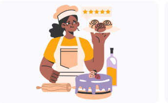

Sobre Repostería Catalina
Repostería Catalina nació de la pasión por traer un toque de innovación y diversidad al sector rural, donde la oferta de pastelería tradicional chilena era la norma. Nos propusimos ir más allá de lo típico, introduciendo una exquisita selección de pastelería americana que incluye delicias como nuestras irresistibles galletas estilo New York, los aromáticos cinnamon rolls, las aclamadas Carrot Cake y Red Velvet, y el clásico cheesecake.
Nuestra Misión
Endulzar los momentos especiales de nuestros clientes con productos de alta calidad, creativos y elaborados con amor, ofreciendo una experiencia única que combine sabores tradicionales e innovadores.
Nuestra Visión
Ser la repostería de referencia en la zona, reconocida por nuestra innovación, la calidad de nuestros ingredientes y nuestro compromiso con la satisfacción del cliente, expandiendo nuestro servicio de banquetearía personalizada a toda la región.
 Nuestro equipo, listo para crear tus dulces favoritos.